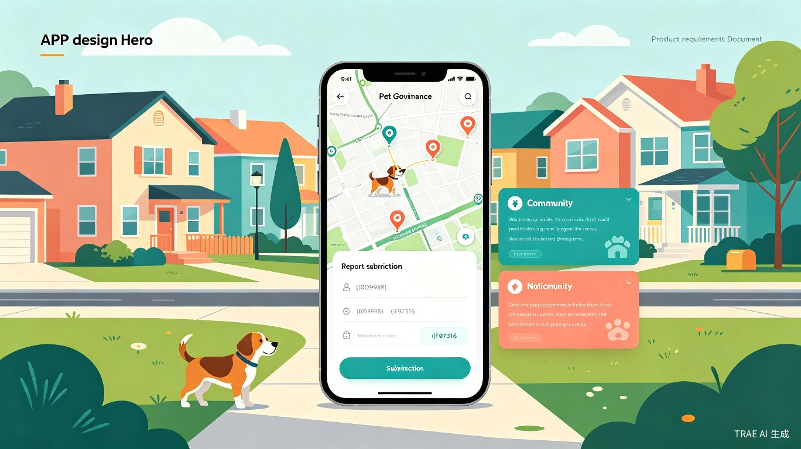
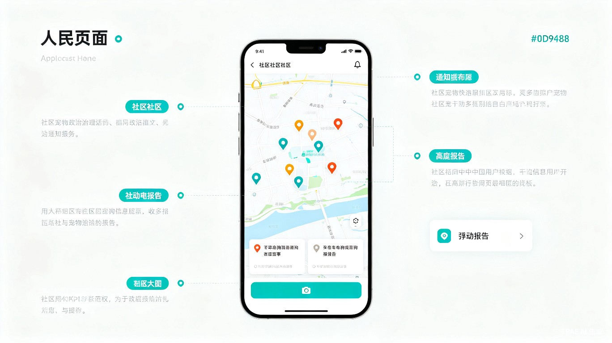
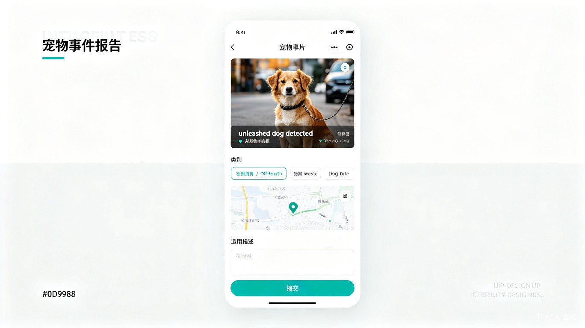
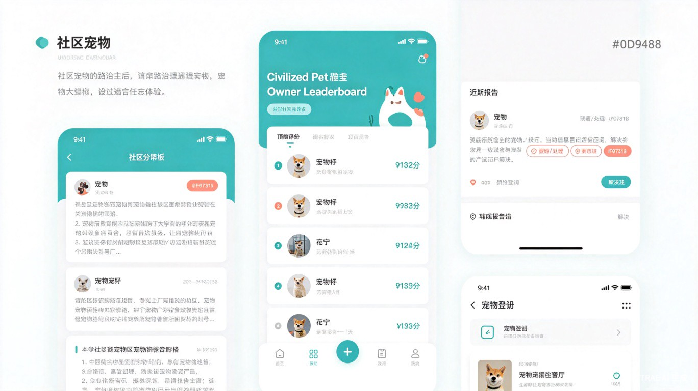

中国城镇宠物犬数量已超过 5000万只，随之而来的社区矛盾日益突出：不牵绳遛狗导致咬伤事件频发、流浪狗在小区内聚集带来安全隐患、犬吠扰民和粪便污染影响居住环境。2026年1月1日施行的新修订《治安管理处罚法》首次将遛狗不牵绳纳入治安处罚，处罚力度从罚款升级至行政拘留[1]。各地养犬管理条例也在加速更新——北京实行养犬12分制、深圳罚款500元、成都2026年8月新条例施行[2]。
然而，法规的落地面临一个核心瓶颈：居民发现问题时缺乏便捷的举报和处置渠道。现有的投诉路径是"拨打12345/110 → 等待转派 → 执法部门响应"，流程冗长、取证困难、反馈不透明。物业虽然有巡查劝阻的法定义务，但缺乏数字化工具支撑，往往以"没有执法权"为由不作为[3]。
本产品定位为社区级宠物治理微信小程序，以小区为单位，让每位居民都能参与监督，通过拍照举报、AI辅助识别、工单流转、邻里互动等功能，构建"居民自治 + 物业响应 + 执法联动"的三层治理体系。
一句话定位：面向社区居民的宠物治理工具——拍照举报不文明养犬行为，追踪流浪狗动态，参与邻里文明养犬共建。
| 用户角色 | 典型画像 | 核心诉求 | 使用频率 |
|---|---|---|---|
| 普通居民 | 有小孩或老人的家庭、怕狗的居民、对社区环境有要求的业主 | 发现不牵绳狗/流浪狗时能快速举报，看到处理进展，获得安全感 | 低频（月均1-3次） |
| 养犬居民 | 文明养犬的宠物主人 | 登记自家犬只信息、查看社区养犬公约、避免被误举报、维护养犬权益 | 中频（周均1次） |
| 物业/社区管理员 | 小区物业客服、社区居委会工作人员 | 接收并处理居民举报、管理社区犬只档案、发布养犬公告、统计治理数据 | 高频（日均多次） |
| 街道/城管 | 街道办养犬管理专员、城管执法人员 | 接收物业上报的严重违规事件、查看辖区各小区治理数据、执法取证 | 中频 |
| 维度 | 政府小程序（文明养犬即时通） | 宠物社区APP（波奇/铃铛） | 流浪猫平台（街猫） | 本产品 |
|---|---|---|---|---|
| 覆盖范围 | 城市级 | 全国 | 全国 | 小区级 |
| 不牵绳举报 | 有 | 无 | 无 | 有 + AI辅助 |
| 流浪狗管理 | 有（仅上报） | 无 | 仅限猫 | 有 + 档案追踪 |
| 物业联动 | 无 | 无 | 无 | 工单流转 |
| 邻里互动 | 无 | 有（社交） | 有（直播） | 有（治理导向） |
| 产品形态 | 小程序 | 独立APP | 独立APP | 小程序 |

业务逻辑：用户打开小程序后进入首页，地图自动定位到当前小区范围。地图上叠加三类标记点：红色标记（待处理举报）、黄色标记（处理中）、绿色标记（已办结）。地图下方显示社区公告摘要和近期举报动态列表。
交互逻辑：点击标记点弹出举报详情卡片（类别、时间、状态）；点击底部浮动"+"按钮进入拍照举报页；点击公告卡片进入公告详情；下拉刷新获取最新数据。
规则约束：

业务逻辑：居民通过拍照或录像记录不文明养犬行为/流浪狗出没情况。系统调用AI识别接口分析图片，自动判断犬只是否牵绳、是否为流浪犬，辅助居民选择举报类别。居民确认信息后提交，系统自动获取GPS定位并生成工单。
交互逻辑：
举报类别：
| 类别 | 说明 | 处理优先级 | 处置主体 |
|---|---|---|---|
| 遛狗不牵绳 | 犬只在公共区域未被牵引绳控制 | 高 | 物业劝阻 → 屡犯上报城管 |
| 流浪犬出没 | 无主流浪犬在小区内活动 | 高 | 物业管控 → 上报城管收容 |
| 犬只伤人 | 犬只咬伤或攻击居民 | 紧急 | 立即报警110 + 物业协助 |
| 犬吠扰民 | 持续吠叫影响居民休息 | 中 | 物业调解 → 屡犯上报公安 |
| 粪便未清理 | 犬只排泄物未及时清理 | 中 | 物业保洁 + 劝阻 |
| 违规饲养烈性犬 | 饲养禁养犬种 | 高 | 物业上报公安 |
规则约束：
业务逻辑：每条举报生成唯一工单，工单在"居民→物业→执法部门"之间流转。物业需在24小时内响应，72小时内反馈处理进展。超时未响应自动升级至社区居委会，7天未处理升级至街道办。
工单状态流转：
stateDiagram-v2
[*] --> 已提交: 居民提交举报
已提交 --> 物业受理: 物业确认接收（24h内）
已提交 --> 已超时: 24h未受理
已超时 --> 居委会介入: 自动升级
物业受理 --> 处理中: 物业开始处置
处理中 --> 已办结: 处理完成
处理中 --> 执法介入: 物业无法处理
执法介入 --> 已办结: 执法部门处置完成
居委会介入 --> 处理中: 居委会协调
已办结 --> [*]: 举报人确认
交互逻辑：举报人可在"我的举报"列表查看所有提交的工单，点击进入详情页查看完整流转记录。每次状态变更推送微信服务通知。办结后，举报人可对处理效果进行1-5星评价。
业务逻辑：当同一区域多次出现流浪狗举报时，系统自动聚合为"流浪狗档案"。档案包含：首次发现时间、出没区域（地图标记）、出现频次、居民上传的照片、当前状态（待处置/TNR中/已收容/已领养）。
交互逻辑：首页地图上流浪狗标记点为橙色爪印图标，点击进入档案详情页。详情页展示该流浪狗的照片集、出没时间线、处置记录。居民可补充新目击信息（"我今天在X栋楼下又看到了"）。
规则约束：
业务逻辑：养犬居民自愿登记自家犬只信息，包括：犬只照片、品种（可选AI识别）、毛色、体重、疫苗注射记录、养犬人联系方式。登记后生成电子犬牌（含二维码），物业巡查时可扫码核验。
设计意图：宠物登记并非强制要求，但提供两个激励——登记犬只的举报可快速核验身份（减少误举报），登记犬只的主人可参与文明养犬榜评选。登记信息仅物业可见，不向其他居民公开。
业务逻辑：物业/居委会发布社区养犬相关公告，包括：养犬公约、疫苗集中接种通知、流浪狗处置进展、月度治理报告、领养信息等。公告支持图文混排，可定向推送到相关业主。

业务逻辑：基于多维度数据生成社区养犬文明指数：
物业/社区管理员通过独立的管理入口（可嵌入物业APP或独立Web后台）使用以下功能：
| 功能模块 | 说明 | 优先级 |
|---|---|---|
| 工单管理 | 查看待处理工单列表，分配处理人，更新处理进度，上传处理照片，办结工单 | P0 |
| 犬只档案管理 | 查看/编辑流浪狗档案，更新处置状态，关联工单记录 | P0 |
| 宠物登记审核 | 审核居民提交的犬只登记信息，通过/驳回 | P1 |
| 公告发布 | 创建/编辑/删除社区公告，设置推送范围 | P1 |
| 数据看板 | 小区举报量趋势、分类占比、处理时效、流浪狗分布热力图、月度治理报告 | P2 |
| 事件上报 | 将严重违规事件（犬只伤人、烈性犬）一键上报至街道办/城管/公安 | P0 |
flowchart TD
A[居民发现不文明养犬/流浪狗] --> B[打开小程序拍照举报]
B --> C{AI识别}
C -->|未牵绳犬只| D[自动选择类别：遛狗不牵绳]
C -->|无主流浪犬| E[自动选择类别：流浪犬出没]
C -->|识别失败| F[用户手动选择类别]
D --> G[提交举报工单]
E --> G
F --> G
G --> H[物业收到工单通知]
H --> I{能否自行处理?}
I -->|能| J[物业现场处置]
I -->|不能| K[上报执法部门]
J --> L[更新工单进度]
K --> L
L --> M[居民收到处理通知]
M --> N[居民评价处理效果]
N --> O[数据沉淀至治理看板]
犬只检测AI技术已从实验室走向实际应用，国内多个城市已有成功落地案例[4]。本产品采用"端侧初筛 + 云端精识别"的混合方案：
| 识别任务 | 技术方案 | 准确率 | 延迟 |
|---|---|---|---|
| 犬只检测（是否有狗） | YOLOv8n 端侧推理 | 95%+ | <100ms |
| 是否牵绳判断 | 云端API（快瞳科技/博思廷） | 70%-90%[5] | 1-2s |
| 品种识别 | 云端API（快瞳180+品种） | 98%+[6] | 1-2s |
graph TB
subgraph 居民端
A[微信小程序] --> B[拍照/选图]
B --> C[端侧YOLOv8犬只检测]
C --> D[云端AI识别API]
end
subgraph 服务端
D --> E[举报工单服务]
E --> F[工单流转引擎]
F --> G[消息推送服务]
E --> H[犬只档案服务]
E --> I[地图标记服务]
end
subgraph 管理端
J[物业Web后台] --> F
J --> H
J --> K[数据看板]
end
subgraph 外部系统
F --> L[街道办/城管接口]
G --> M[微信服务通知]
end
MVP阶段聚焦于验证"居民是否愿意用小程序举报"这一核心假设，仅保留最小功能集：
| 功能 | MVP范围 | 简化说明 |
|---|---|---|
| 拍照举报 | 手动选择类别 + 拍照上传 | 不含AI识别，用户手动选择举报类别 |
| 工单追踪 | 状态展示 + 微信通知 | 不含自动升级机制，物业手动更新状态 |
| 管理后台 | 工单列表 + 状态更新 | Web端简单后台，不含数据看板 |
| 首页 | 举报列表 + 公告列表 | 不含地图，用列表替代 |
MVP验证指标：
| 指标类别 | 指标名称 | 计算方式 | 目标值 |
|---|---|---|---|
| 使用指标 | 月活跃举报人数 | 当月提交至少1条举报的去重用户数 | [To be confirmed] |
| 人均举报频次 | 月举报总量 / 月活跃举报人数 | [To be confirmed] | |
| 小程序次日留存率 | 次日打开小程序的用户 / 当日新用户 | ≥ 15% | |
| 治理指标 | 工单响应率 | 24h内物业受理的工单 / 总工单数 | ≥ 80% |
| 工单办结率 | 72h内办结的工单 / 总工单数 | ≥ 60% | |
| 举报人满意度 | 评价4-5星的工单 / 已评价工单总数 | ≥ 70% | |
| 运营指标 | 宠物登记率 | 已登记犬只数 / 估计小区犬只总数 | [To be confirmed] |
| 重复举报下降率 | 同一区域同类举报环比下降比例 | 逐月下降 |
| 风险 | 概率 | 影响 | 应对策略 |
|---|---|---|---|
| 邻里冲突激化 | 高 | 高 | 举报人对被举报人保密；黑榜初期不公开；设置"友好提醒"前置选项（先发提醒而非直接举报）；物业作为缓冲层 |
| 物业配合度低 | 中 | 高 | 降低物业工作量（AI自动分类、模板回复）；向物业展示治理数据价值（减少12345投诉量）；争取街道办背书推动物业使用 |
| 恶意举报/虚假举报 | 中 | 中 | 同一用户频率限制（24h内3次）；位置不可篡改；AI图片审核过滤无效举报；累计恶意举报账号封禁 |
| AI识别准确率不足 | 中 | 低 | 定位为"辅助参考"而非"执法依据"；用户可覆盖AI结果；持续用用户反馈数据优化模型 |
| 肖像权/隐私纠纷 | 低 | 高 | 照片自动模糊人脸；公开展示仅显示犬只区域；举报前置隐私提示；用户协议明确权责 |
| 用户活跃度不足 | 中 | 中 | 接入物业微信群推广；举报积分兑换（物业停车券等）；与领养活动结合增加粘性 |